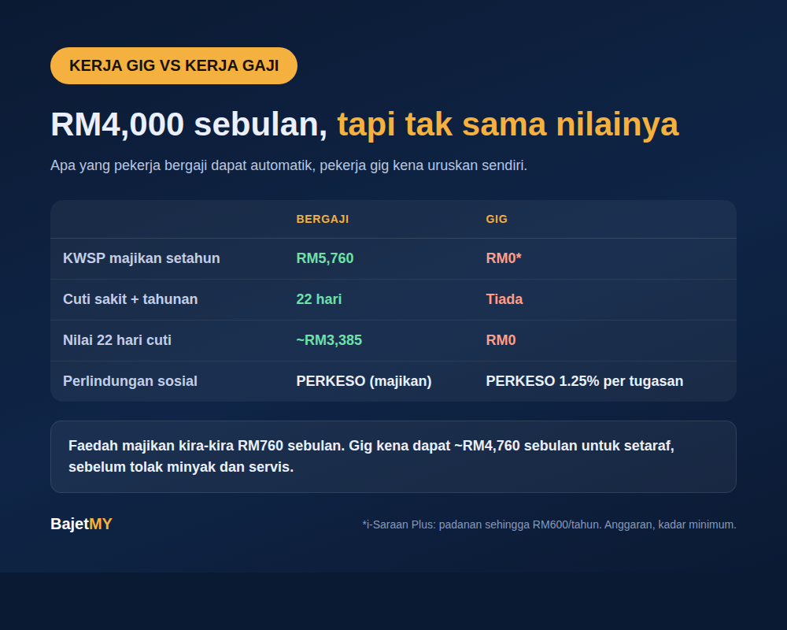

Dua orang, dua-dua dapat RM4,000 sebulan. Seorang pekerja bergaji, seorang lagi pemandu e-hailing atau penghantar makanan. Pada slip, angka sama. Tapi nilai sebenar tak sama.
Artikel ini bandingkan apa yang pekerja bergaji dapat secara automatik dengan apa yang pekerja gig kena uruskan sendiri. Ini bukan untuk kata satu lebih baik. Gig ada kelebihan yang pekerja bergaji tak ada, seperti fleksibiliti.

Apa yang pekerja bergaji dapat
Mengikut Akta Kerja 1955 dan peraturan KWSP:
- Caruman KWSP majikan. 12% daripada gaji untuk gaji sehingga RM5,000 (13% jika lebih). Untuk gaji RM4,000, itu RM480 sebulan, RM5,760 setahun, selain 11% bahagian pekerja.
- Cuti sakit bergaji. 14 hari setahun untuk pekerja dengan perkhidmatan kurang dua tahun, 18 hari untuk dua hingga lima tahun, dan 22 hari untuk lebih lima tahun.
- Cuti tahunan bergaji. 8 hari, 12 hari atau 16 hari mengikut tempoh perkhidmatan.
Apa yang pekerja gig dapat
Akta Pekerja Gig 2025 (Akta 872) berkuat kuasa mulai 31 Mac 2026 dan meliputi lebih 1.6 juta pekerja gig, termasuk pemandu e-hailing dan penghantar makanan atau barangan.
- Perlindungan PERKESO. Caruman automatik 1.25% daripada pendapatan setiap tugasan, ditolak oleh platform. Untuk pendapatan RM4,000, itu kira-kira RM50 sebulan.
- Caruman KWSP tidak diwajibkan. Tiada caruman majikan automatik.
- Tiada cuti sakit atau cuti tahunan bergaji secara automatik. Hari tak kerja bermakna tiada pendapatan.
Satu pertolongan: i-Saraan Plus
Bermula 1 Januari 2026, pemandu e-hailing dan p-hailing yang warganegara Malaysia berumur bawah 60 tahun boleh dapat caruman padanan kerajaan 20% daripada caruman sukarela, sehingga RM600 setahun (RM6,000 sepanjang hayat). Untuk dapat RM600 penuh, caruman sendiri perlu sekurang-kurangnya RM3,000 setahun, iaitu RM250 sebulan.
Kiraan untuk RM4,000
| Pekerja bergaji RM4,000 | Pekerja gig RM4,000 | |
|---|---|---|
| Caruman KWSP majikan setahun | RM5,760 | RM0 (kecuali i-Saraan Plus, sehingga RM600) |
| Cuti sakit dan tahunan (minimum, perkhidmatan 1 hingga 2 tahun) | 22 hari | Tiada |
| Nilai 22 hari cuti (RM4,000 dibahagi 26 hari) | kira-kira RM3,385 | RM0 |
| Perlindungan sosial | PERKESO melalui majikan | PERKESO 1.25% per tugasan |
Jumlah faedah majikan di atas ialah kira-kira RM9,145 setahun, atau RM760 sebulan. Maksudnya, untuk setaraf dengan gaji RM4,000, pekerja gig perlu dapat kira-kira RM4,760 sebulan, dan itu sebelum tolak belanja minyak, servis kenderaan dan ansuran.
Nota: angka ini ialah anggaran berdasarkan kadar minimum. Cuti sebenar bergantung pada kontrak dan tempoh perkhidmatan, dan pendapatan gig berbeza setiap bulan.
Tapi gig ada kelebihan
- Boleh pilih bila dan berapa lama nak kerja.
- Boleh kerja dengan lebih daripada satu platform.
- Sesuai sebagai pendapatan sampingan di sebalik kerja tetap.
Apa pekerja gig boleh buat
- Asingkan duit untuk KWSP sendiri. Walaupun tidak diwajibkan, simpan sekurang-kurangnya RM250 sebulan jika layak i-Saraan Plus supaya dapat RM600 padanan.
- Bina dana kecemasan lebih besar. Tiada cuti sakit bergaji bermakna simpanan perlu menampung hari tak kerja. Cuba kalkulator dana kecemasan Bajet MY.
- Kira pendapatan bersih sebenar. Tolak minyak, servis, penyusutan kenderaan dan ansuran sebelum bandingkan dengan gaji tetap.
- Semak status PERKESO. Pastikan platform mendaftarkan korang dan caruman ditolak dengan betul.
Sumber
- PERKESO, Akta Pekerja Gig 2025 (Akta 872), siaran media 1 April 2026
- Kosmo, Caruman 1.25% pendapatan harian, pekerja gig dapat perlindungan Perkeso (15 Mei 2026)
- Belanjawan 2026: i-Saraan Plus (The Sun, 10 Oktober 2025; iMoney)
- Akta Kerja 1955 dan caruman KWSP majikan (kadar semasa)